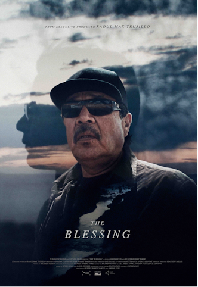
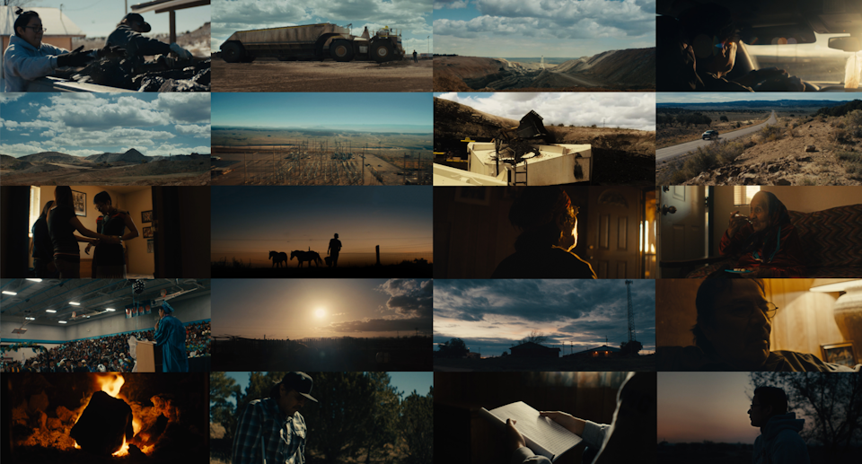
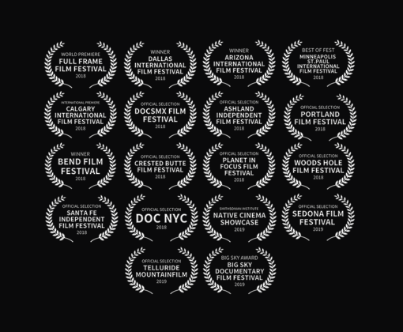

“A unique film, opening doors to a world and characters audiences don’t ever see. It’s poetic and emotional and beautifully shot.”
Trailer

The Film
Personal and crucial, The Blessing follows a Navajo coal miner raising his secretive daughter as a single father, struggling with his part in the irreversible destruction of their sacred mountain at the hands of America's largest coal producer.
The Blessing is a feature-length documentary film, co-directed by the award winning filmmaking team Jordan Fein and Hunter Robert Baker. Written and Edited by world renowned Academy Member Editor Ricardo Acosta, C.C.E. (Marmato, The Silence of Others, Herman's House), Original Score by Kevin Kiner (Netflix's Making A Murderer and AMC's Hell On Wheels), and Sound Design by Emmy Award Winner Joanna Fang (Cartel Land).
Made with support from the International Documentary Association and the Points North Institute, and captured over the course of five years, the filmmakers join a Navajo family for some of the most deeply personal and important moments in the character’s lives, from a miner enduring a life threatening injury and confronting the deep spiritual sacrifice he makes to provide for his family. To a young Navajo woman discovering her inner identity and managing the expectations of her traditional father, while playing on the men’s varsity football team and being crowned homecoming queen.
First and foremost a character-driven film, The Blessing brings the search for acceptance to broad audiences through the unprecedented and intimate access the filmmakers have been given to this underreported social and environmental story on the Navajo Nation.

“An emotional powder keg … the film’s a nearly Shakespearean drama, one in which a deeply religious father is forced to choose between sacrilege (taking part in the destruction of his sacred tribal mountain) and feeding his family.”
“Evocative…breathtakingly gorgeous…captures the instability and yearning of working-class life…has all the visual poetry of the best movies about small-town America.”
“This is a story of resilience and perseverance, but ultimately a story of pain and loss of identity. It’s haunting and powerful.”
“Exquisite…brings a bright moral compass to a dark world.”
“Inspiring”
“Wonderful”
“Poignant”
Awards
World Premiere — Full Frame Documentary Film Festival, April 7, 2018
- Grand Jury PrizeDallas International Film Festival
- Best Feature DocumentaryArizona International Film Festival
- Best of FestMinneapolis St. Paul International Film Festival
- Best Native Feature FilmBend Film Festival
- Big Sky AwardBig Sky Documentary Film Festival
- Best Coverage of Native AmericaNational Native Media Awards (The Native American Journalists Association)

Official Selections & Screenings
DOC NYC Full Frame Documentary Film Festival Smithsonian National Museum of the American Indian IAIA Museum of Contemporary Native Arts Ashland Independent Film Festival Mountainfilm Minneapolis–St. Paul International Film Festival Arizona International Film Festival Dallas International Film Festival Santa Fe Independent Film Festival Portland Film Festival Woods Hole Film Festival Calgary International Film Festival Bend Film Festival DocsMX International Documentary Festival of Mexico City Crested Butte Film Festival Planet in Focus Film Festival Toronto Red Nation Film Festival Wild & Scenic Film Festival Big Sky Documentary Film Festival Southampton Arts Center Montclair Art Museum
Credits
- Directors
- Jordan Fein
Hunter Robert Baker - Executive Producer
- Raoul Max Trujillo
- Cinematographer
- Hunter Robert Baker
- Writer & Editor
- Ricardo Acosta, C.C.E.
- Editors
- Brett Banks, Jordan Fein, Lance Edmands
- Original Score
- Kevin Kiner, David Russell
- Sound Design
- Joanna Fang
- Colorist
- Kath Raisch, Company3
- Broadcast
- PBS | America Reframed, WORLD, NHK Japan
- Support
- International Documentary Association, Points North Institute
The Blessing was co-directed by Jordan Fein & Hunter Robert Baker. Jordan Fein is an Emmy-nominated, Texas-raised director of commercials, documentary and film, based in New York and Los Angeles. About Jordan Fein · Full library